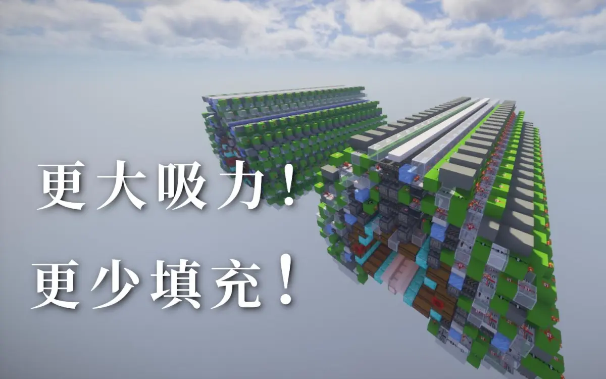

写在前面
很早以前在储电群和众多储电佬论证过be目前不适合大吸力单片，不过现在还是有一些人存在一些误解
并不是je的就是好的，因地制宜才是亘古不变的硬道理
于是我稍微整理了一下，来简单论证一下为什么目前be不适合大吸力全物品单片，以及将来适合大吸力全物品单片的前提
目录
1、简单说一下be大吸力
1.1、什么是大吸力
1.2、大吸力的优势是什么
1.3、什么时候适合大吸力
1.3.1、面对单倍速物品流时的大吸力
1.3.2、面对高倍速物品坨时的大吸力
1.4、为什么目前be不适合大吸力
1.5、be大吸力的发展前提
1.1、什么是大吸力
大吸力全物品单片，是指有更大的漏斗缓存，一次可以吸取更多物品的全物品单片。常见的全物品单片填充物为41 1 1 1 1，如果大量物品经过的时候可以吸取64-41=23的物品。而大吸力通常只需要填充极少量的物品，如一两个，那么就可以吸取64-1=63的物品，这也就是大吸力的由来
@五羊飞kaniol《旋转堆叠全物品单片》：

【Minecraft红石】更大的吸力！更少的填充！全物品单片也能旋转堆叠 B 站视频 »（可能是b站第一个大吸力设计？我个人找不到更早的了）
------------------------------
1.2、大吸力的优势是什么
全物品单片不光有单倍速的处理速度，也有如上所说的23的缓存位。虽然只能压榨一次，但也可以降低物品在水道内的时间，增加掉落物实体的处理速度
而大吸力的这次压榨，可以比寻常的全物品单片吸取更多的掉落物
------------------------------
1.3、什么时候适合大吸力
我们可以假想两种情况：主控处理好的单倍速物品流和主控吐出的极高倍速的物品坨
1.3.1、面对单倍速物品流时的大吸力
目前部分be全物品设计加装了预分类，可以将物品处理成单种物品单倍速的物品流
面对单倍速物品流时，全物品单片很难发挥出缓存的优势。物品流已单倍速输入进水道，同时以单倍速被单片处理进箱子中，漏斗内的物品数量基本稳定在一个较低的数值。即使偶尔有物品流超出了设定的单倍速，也很难完全压榨出23的缓存数量，更别说大吸力的63了
综上所述，大吸力在面对单倍速物品流时并没有展现出明显的优势
1.3.2、面对高倍速物品坨时的大吸力
我们设想一个极端情况，一盒同种物品在一瞬间被主控吐出，成为一坨物品。不考虑be的漏斗bug
这种情况下，很明显地，物品无法通过单次水道完成处理，需要多次循环才能完整地输入进全物品的箱子
每次循环通过这种物品的分类漏斗时，物品只有一次被漏斗吸取的机会。常见的分类单元只能在这一次吸取23个物品，但大吸力可以吸取63个物品。而通常一次循环需要5分钟，足够漏斗处理吸取的这些物品了
简单计算一下，为了处理这盒物品，传统的分类单元需要循环76次，而大吸力只需要28次循环
这是否可以说明，大吸力占据了优势呢？
------------------------------
1.4、为什么目前be不适合大吸力
be对大吸力的不欢迎，原因很显然地出现在了倍速上
在17年的时候，大白熊就已经发出了主控八倍速输出物品的全物品设计。经过这几年不断地发展，je逐渐提升主控的倍速，来寻找一个较高的倍速来完成全物品处理和循环的平衡点
而be却在发展单倍速的限流方案，似乎放弃了压榨23的漏斗缓存。看似是向后踏步，但其实是对于漏斗bug的妥协
漏斗会依据漏斗上的物品经过的先后生成一张表（并不是按照先后顺序，而是经过了一定规则），并按照这张表的先后顺序吸取漏斗内的物品
这也就导致了如果大量物品在近乎同一时间出入漏斗上方时，分类漏斗并不能很好地工作，更常见的是导致分类漏斗失效
为了避免这种情况，通常是采用更低的输出倍速，来拉长掉落物之间的间距，降低不同种类掉落物同时出入漏斗上方的情况
所以，be无法采用更高倍速的主控输出，大吸力的优势也无法更好地体现出来
同时，为了避免大吸力出现的串线问题，大吸力只能采用不串线的ab单片形式。这使得大吸力比同类型的全物品单片体积更大，耗材更多，卡顿更高，布线难度也是直线上升。这对于追求静态卡顿的be全物品设计来说并不友好
所以be目前尚且没有应用大吸力单片的全物品设计，也会在将来的一段时间内并不欢迎这样的全物品设计
------------------------------
1.5、be大吸力的发展前提
难道be真的无法体现出大吸力的优势了吗？并不是
在聚拢技术技术发展到一定程度的时候，零散的掉落物被聚拢成一个一个掉落物团，这样可以大幅降低水道内的掉落物数量，也更方便拉长掉落物之间的间距
这种情况下，更高的倍速也不易触发漏斗bug，也就可以利用高倍速尝试去压榨分类漏斗的缓存，大吸力的优势此时便能体现出来
但目前的弱聚拢暂时达不到这种目的，强聚拢尚且处于概念之中。循环水道对于主控、重投也提出了更高的要求，尚且不及安装一台预分类来得简单
所以大吸力全物品在一段时间内在be可能依然无法普及开
写在最后
并不是说现在做大吸力单片就没有意义了。锁漏斗全物品出现时也存在部件攻关的情况，如全部解锁的长时钟设计、采样设计，动态解锁的设计等等。相信等玩家开始接手聚拢时大吸力也将迎来它的高光时刻
以后番外或许也会尝试论证一些部件或者特定系统的设计？
这篇花了一晚上赶工出来的专栏就凑合看吧 _(:з」∠)_
（封面来源于 @尘世777 的 be大吸力锁漏斗全物品单片 和 @五羊飞kaniol 的 《旋转堆叠全物品单片》）